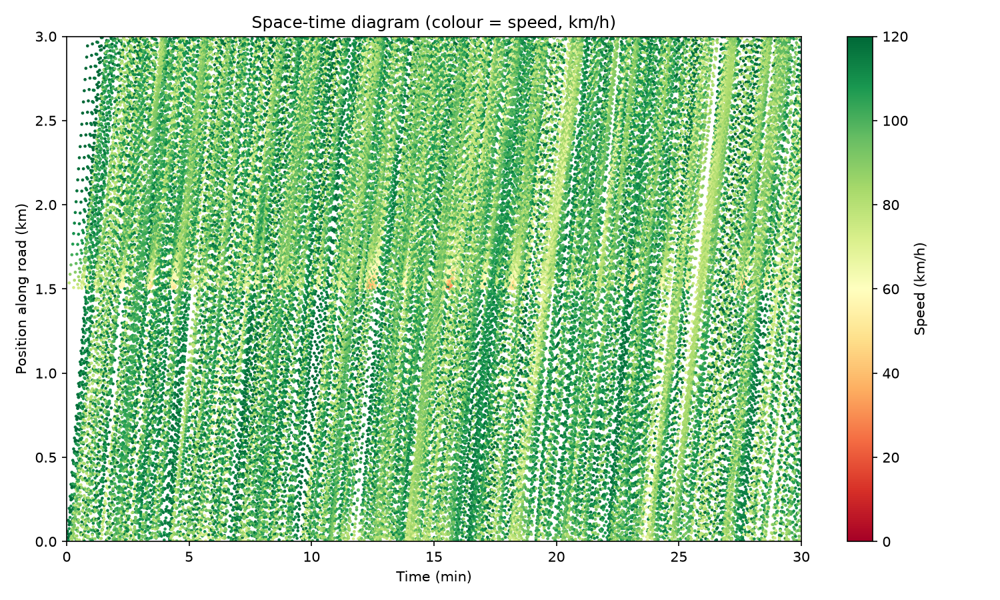
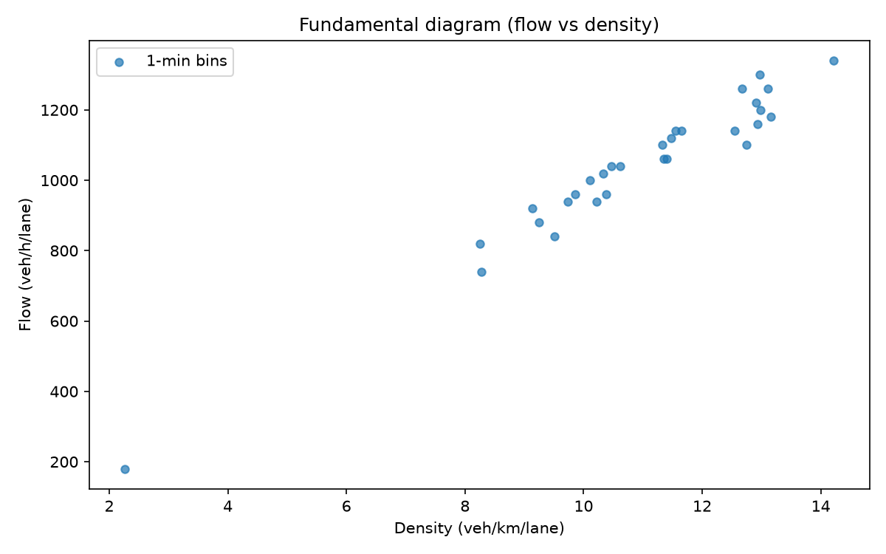
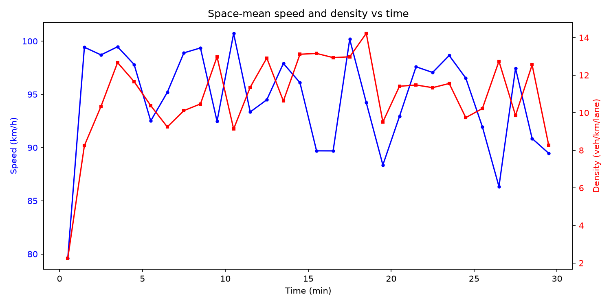
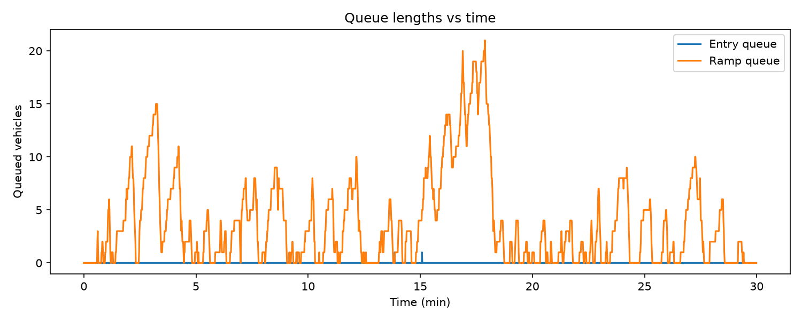

Three-lane freeway with an on-ramp at x=1500 m. Mainline demand 2400 veh/h, ramp demand 900 veh/h, NO ramp metering: ramp vehicles merge on gap acceptance only. Compare with ramp_metering_on.
| Metric | Value |
|---|---|
| Mean travel time | 97.48 s |
| Median travel time | 102.45 s |
| 95th percentile | 137.60 s |
| Free-flow travel time | 86.04 s |
| Mean delay | 11.44 s |
No sustained stop-and-go wave detected.
n/a




Generated by traffic-flow-simulator (IDM + MOBIL). See docs/RESEARCH.md.